검색 결과가 비어 있음
초콜릿박스, 초박, 랜덤박스, 앱테크 검색어에서 후기를 보고 판단할 근거가 아직 부족합니다.
초박과 랜덤박스 관련 내용을 찾아보면, 온라인 검색 포털에는 아직 참고할 만한 글이 많지 않습니다. 랜덤박스 자체도 앱테크나 이벤트 채널에서 충분히 노출되고 있지 않아 보입니다. 그래서 큰 방향은 앱테크 쪽 사람들을 먼저 모으고, 그중 일부가 첫 박스를 까보게 만드는 것입니다.
초콜릿박스, 초박, 랜덤박스, 앱테크 검색어에서 후기를 보고 판단할 근거가 아직 부족합니다.
포인트, 퀴즈, 이벤트 명목으로 소개하면 광고보다 정보 공유에 가깝게 받아들여질 수 있습니다.
“오늘 이거 나왔어요”, “신규 포인트 있어요”, “정답 공유합니다” 같은 작은 이유가 첫 클릭을 만듭니다.
핵심은 “반복 구매자를 어디서 찾을까”가 아닙니다. 먼저 불특정다수에게 랜덤박스를 한 번 까게 만들고, 그중 일부가 재미를 느껴 다시 들어오게 만드는 깔때기입니다.
조사한 캡쳐들을 보면 사람들이 랜덤박스를 시작하는 이유가 보입니다. 초박은 완전히 모르는 서비스가 아니라 이미 일부 방과 카페에서 이야기되고 있습니다. 다만 검색했을 때 정리된 후기와 긍정적인 맥락이 부족해 더 크게 퍼지지 못하고 있습니다.
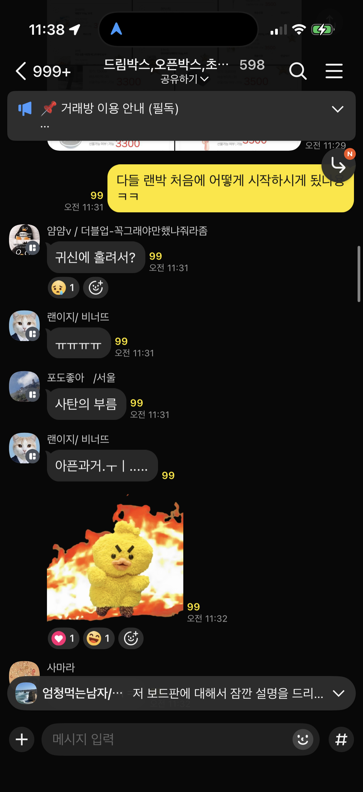
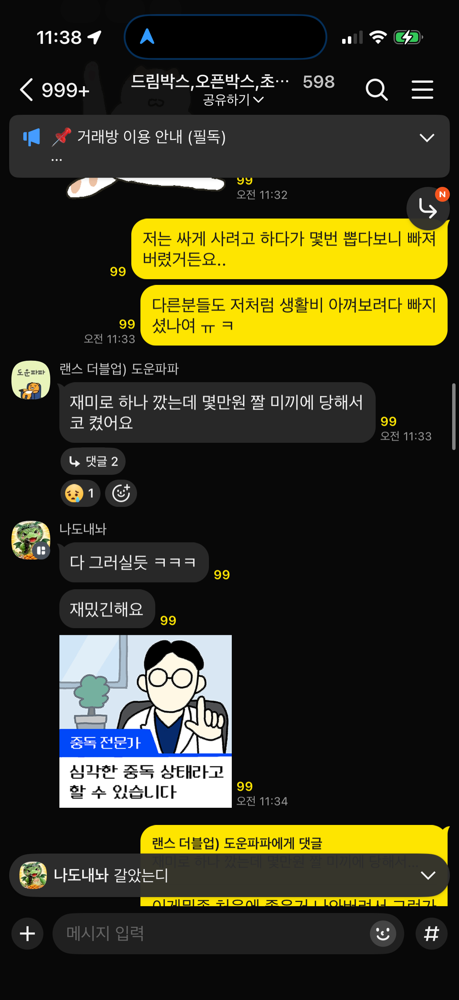
제가 보기에는 관련 카페와 앱테크 채널에 랜덤박스 노출이 아직 많지 않습니다. 보통 바이럴은 인지에서 끝나는 경우가 많지만, 랜덤박스는 다릅니다. 글을 보고 바로 앱을 깔거나 첫 박스를 까볼 수 있어, 유의미한 설치와 구매까지 이어질 가능성이 있습니다.
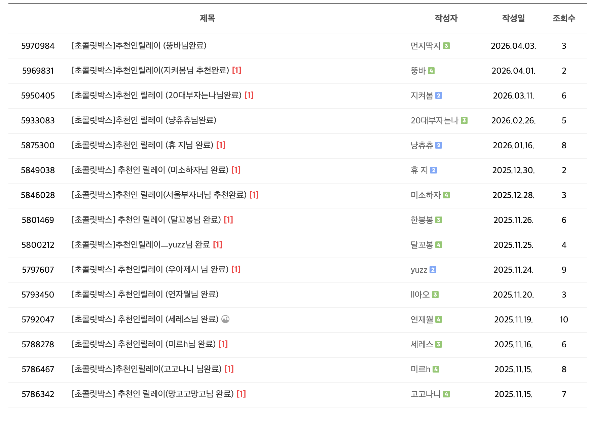
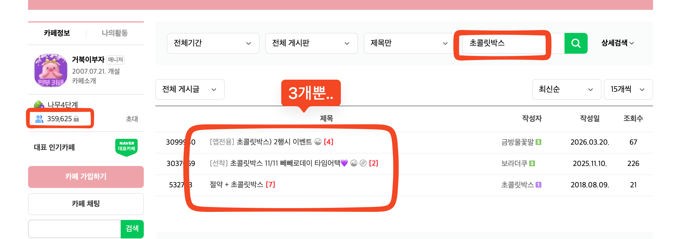
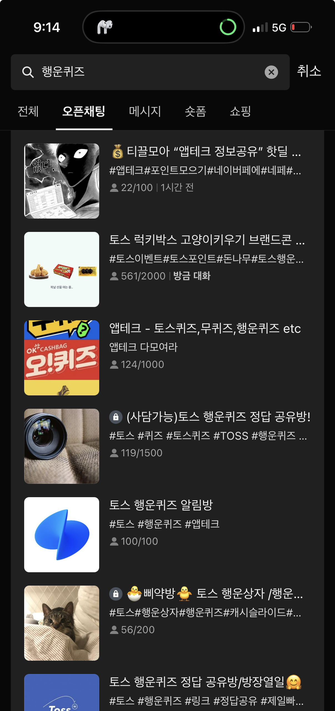
초박 콘텐츠 개발까지 같이 하면 마케팅할 명분이 더 많아집니다. 사주나루의 나루퀴즈처럼 퀴즈를 맞추고 코인을 받는 구조를 만들면, 카페에서는 광고가 아니라 정보성 공유로 올릴 수 있고, 고객에게는 매일 다시 들어올 이유가 생깁니다. 특히 행운퀴즈류 콘텐츠는 앱테크 채널에서 조회수가 크게 나오는 형식이라 초박과 잘 맞습니다.
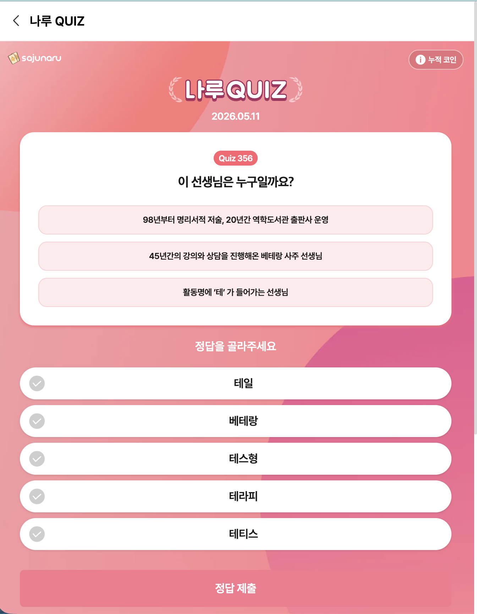
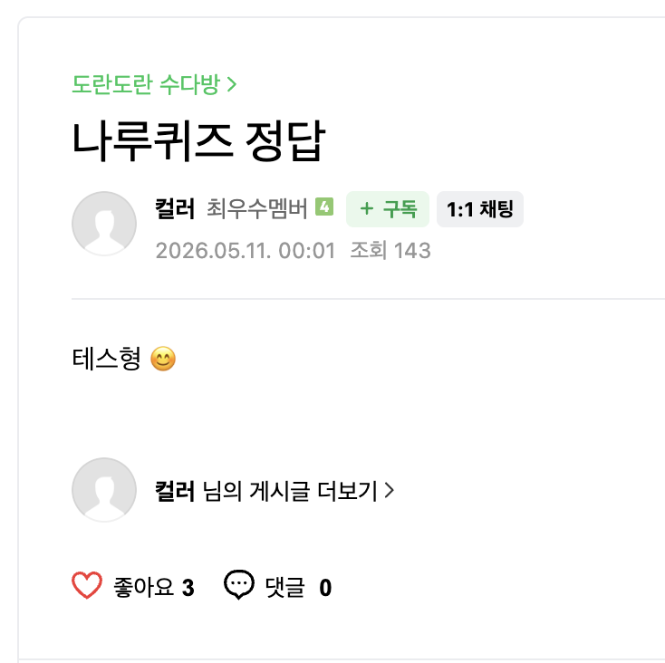
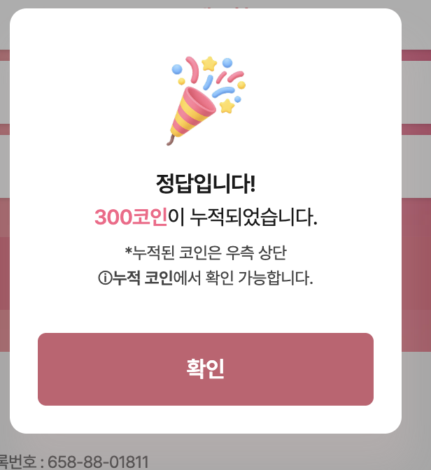
처음부터 사람이 모든 글을 쓰면 속도가 나지 않습니다. 자동화로 초안을 많이 만들고, 광고 티가 나거나 어색한 문장은 사람이 보는 수준으로 다듬어 채널별로 계속 발행하겠습니다. 제가 직접 운영하는 서비스에서도 이 방식으로 실제 노출과 발행 결과를 만들었고, 랜덤박스에도 충분히 효과가 있을 것으로 봅니다.
초콜릿박스, 초박, 랜덤박스, 앱테크, 행운퀴즈, 더블업 비교처럼 검색과 커뮤니티에 뿌릴 키워드를 먼저 잡습니다.
오늘 이거 나왔어요, 초박 첫 후기, 더블업 비교, 이벤트 정답 공유, 신규 포인트 안내 같은 소재를 채널별로 만듭니다.
네이버 카페, 블로그, 티스토리, 워드프레스, 디시, 다음 테이블, 앱테크 오픈채팅, 네이버 검색광고까지 묶어 운영합니다.
초콜릿박스용으로 회사 정보, 사용자 유형, 채널 목록, 금지 표현, 등록 기록 파일을 나눠서 운영합니다.
초콜릿박스, 초박, 랜덤박스, 앱테크, 이벤트 당첨, 포인트, 리워드 쇼핑 키워드를 검색 의도별로 나눕니다.
앱테크 유저, 랜덤박스 호기심 유저, 이벤트 참여 유저, 선물 구매 유저 등으로 말투와 관심사를 분리합니다.
네이버 카페는 짧고 자연스러운 질문형, 블로그/워드프레스/티스토리는 검색형 후기, 디시는 직접 링크 없는 반응형, 다음 테이블은 타깃 게시판 맞춤형으로 변환합니다.
광고 티 나는 문장, 과장 수익 표현, 확률 보장, 현금성 오해, 반복 문체를 제거한 뒤 등록합니다.
채널, 계정, 타깃, 제목, 발행 URL, 등록 시각을 기록 파일에 남겨 다음 작업 때 중복과 위험을 줄입니다.
아래는 제가 직접 운영 중인 사주 서비스에서 실제로 사용한 예시입니다. 티스토리, 네이버 블로그, 디시까지 실제 공개 발행했고, 디시는 댓글 반응까지 확인 가능한 화면입니다.
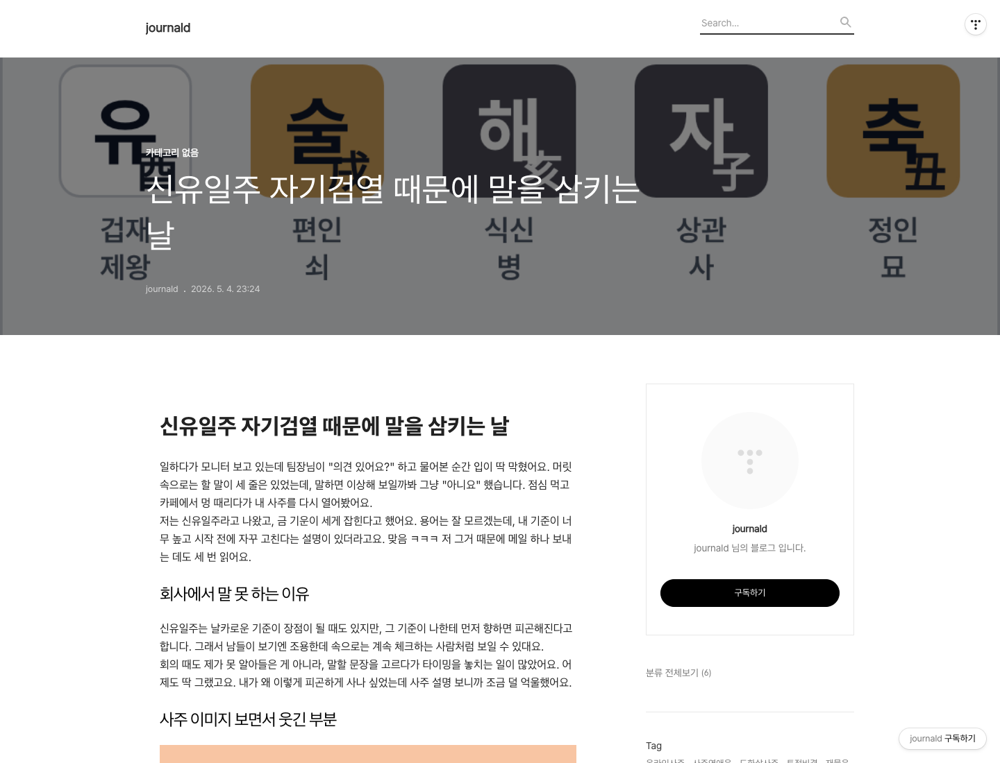
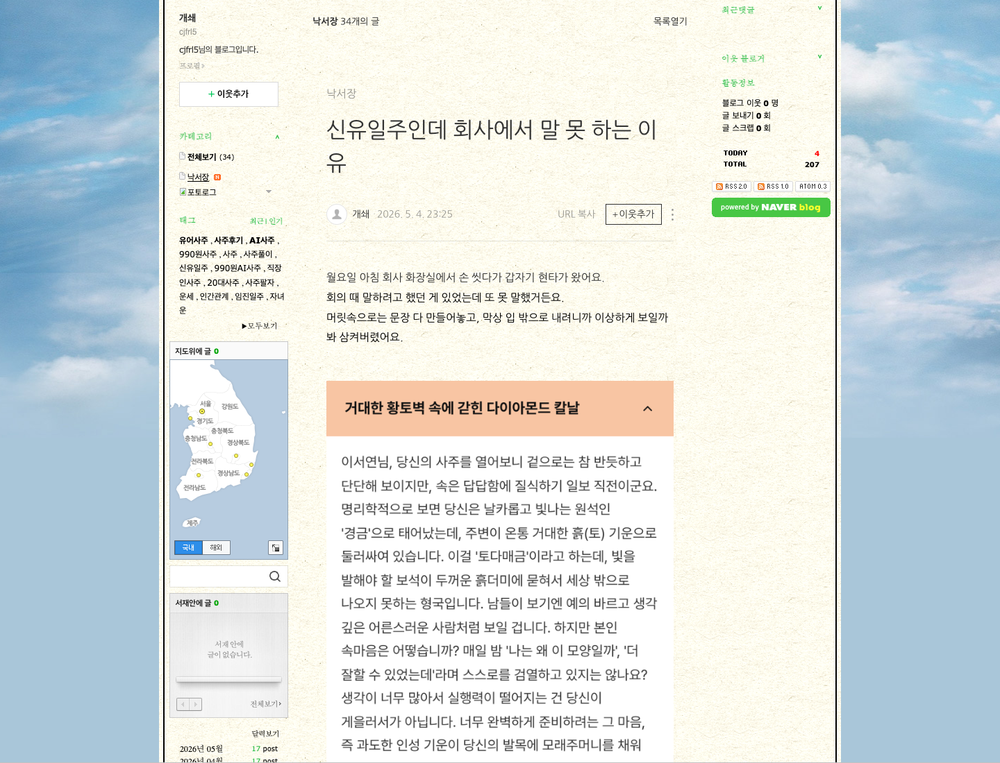
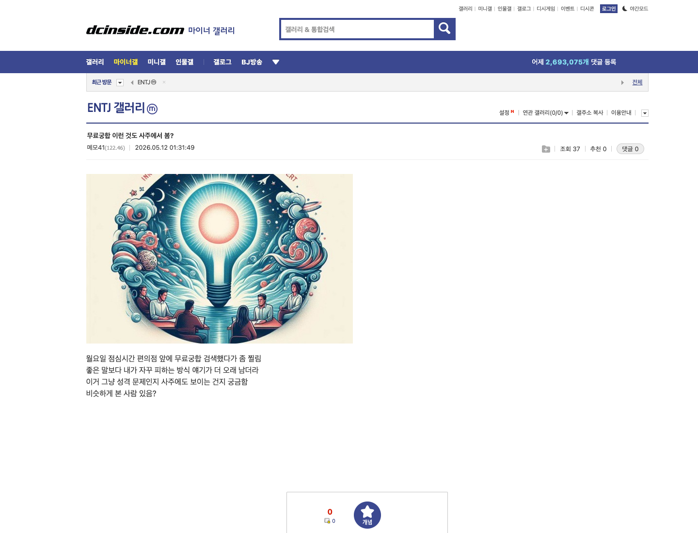
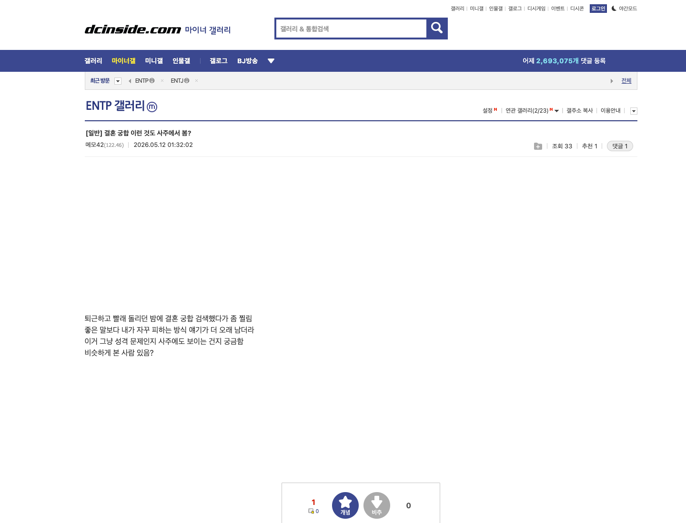
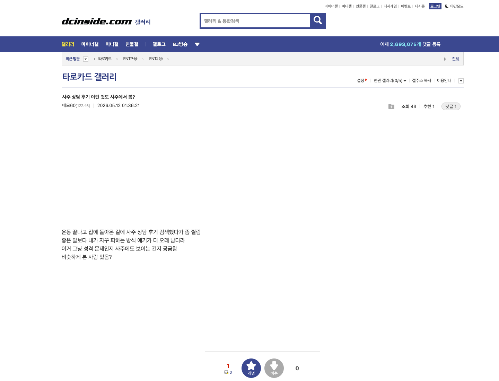
유어사주에서는 실제 사주/궁합 결과를 이미지와 본문으로 묶어 블로그형 콘텐츠에 사용했습니다. 초콜릿박스도 이미지 첨부가 가능한 채널에는 이벤트 페이지, 당첨 화면, 리워드 내역, 상품 캡쳐를 함께 넣을 수 있습니다.
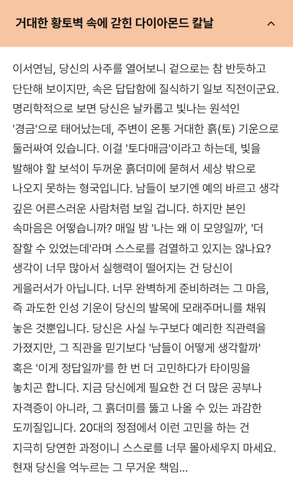
사주 풀이 섹션 이미지. 본문 소재와 이미지 인덱스를 맞춰 사용.
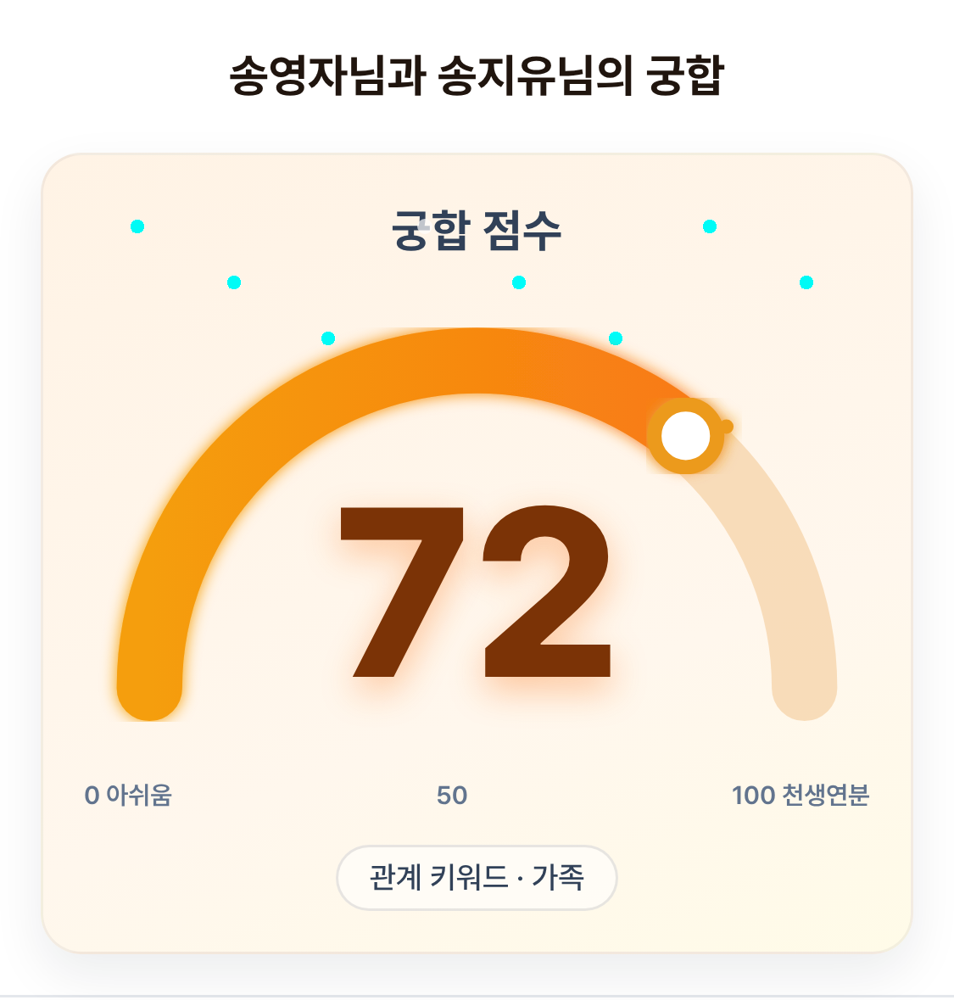
궁합 점수형 이미지. 초콜릿박스에서는 이벤트 결과, 포인트, 당첨 인증으로 치환 가능.
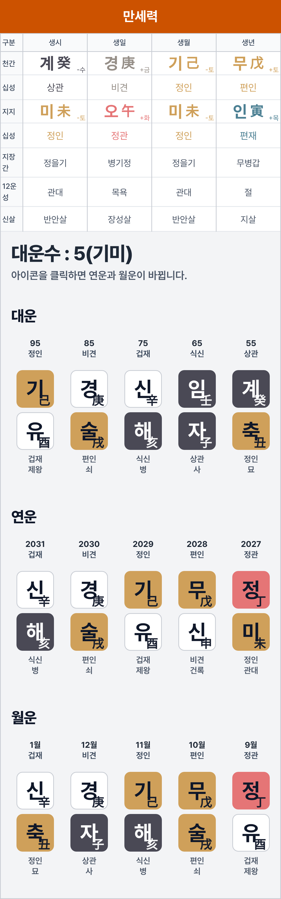
원본 결과 상세 이미지. 긴 세로형 캡쳐도 블로그와 카페 본문에 맞게 삽입 가능.
대부분의 주요 채널은 이미 확보해두었고, 필요하면 추가로 넓힐 수 있습니다. 검색과 커뮤니티에 남는 작은 신뢰 신호를 계속 쌓는 방식으로 운영합니다.
| 핵심 사업 가설 | 랜덤박스는 처음부터 반복 구매자를 찾아 설득하는 사업이 아닙니다. 불특정다수에게 “한 번 까보는 맛”을 느끼게 하고, 그중 일부가 다시 사고, 그중 더 작은 일부가 반복 구매자가 되는 깔때기 사업입니다. 오픈채팅, 추천인 릴레이, 앱테크 방처럼 “사람들이 서로 확인하는 공간”이 이 입구를 넓힙니다. |
|---|---|
| 네이버 카페 | 앱테크, 이벤트, 랜덤박스, 선물/득템 카페에 질문형 후기와 이벤트 공유글 배치. 대형 카페 검색 결과가 적은 곳은 이벤트 공유글로 선점하고, 기존 릴레이가 있는 곳은 더 자연스러운 추천인/후기형으로 보강합니다. |
| 블로그 / 티스토리 | 초콜릿박스, 초박, 랜덤박스 추천, 앱테크 이벤트, 리워드 쇼핑 키워드에 맞춘 검색형 후기와 비교 글 생성. |
| 워드프레스 | 롱테일 검색 키워드용 독립 글을 배치합니다. “랜덤박스 앱 비교”, “초콜릿박스 후기”, “더블업 초박 비교”처럼 검색 의도가 분명한 글을 쌓아 검색면을 넓힙니다. |
| 디시 / 커뮤니티 | 직접 링크보다 반응, 인증, 질문, 비교 맥락을 우선. 고위험 채널은 링크 없이 브랜드명/초성/검색 유도만 사용. 조회수와 댓글 반응을 추적합니다. |
| 다음 테이블 | 앱테크, 이벤트, 포인트, 랜덤 쇼핑에 맞는 게시판을 찾아 정보 공유형 글을 배치합니다. 게시판별 반응을 보고 살아있는 타깃만 남깁니다. |
| 카톡 / 오픈채팅 | 당첨 인증, 오늘의 박스, 이벤트 캘린더, 릴레이 예측처럼 매일 이야기할 소재를 공급. 이미 598명 규모의 랜덤박스 대화방이 확인되므로, 직접 운영보다 관찰, 소재 공급, 공식 커뮤니티 전환을 단계적으로 검토합니다. |
| 이벤트 재방문 | 나루퀴즈처럼 정답 공유와 작은 코인 보상을 묶어 매일 반복되는 이유를 만듭니다. 확률 보장이나 수익 보장 표현은 쓰지 않고, 이벤트 정보/정답/참여 후기 중심으로 확산합니다. |
| 경쟁사 키워드 | 더블업, 랜덤박스, 오픈박스 등 경쟁/인접 키워드와 엮어 검색면에 들어갑니다. 포지션은 “배송시킬 건 더블업이 많을 수 있지만, 잘 나오는 느낌은 초박”처럼 솔직한 비교형으로 잡습니다. |
| 네이버 검색광고 | 초콜릿박스/초박 직접 검색어, 앱테크 검색어, 더블업 같은 비교 검색어를 나눠 자동 입찰로 관리합니다. 커뮤니티에서 검색 수요를 만들고, 검색광고로 바로 받습니다. |
찌라이는 원고만 만들지 않고, 채널별로 어디에 뿌렸는지와 어떤 반응이 있었는지 추적합니다. 카페와 디시처럼 조회수가 보이는 채널은 숫자로 보고, 검색 글은 URL과 검색 노출 상태를 남깁니다.
네이버 카페, 네이버 블로그, 티스토리, 워드프레스, 디시인사이드, 다음 테이블, 앱테크 오픈채팅, 추천인 릴레이형 게시판, 네이버 검색광고.
카페 조회수, 디시 조회수, 댓글 수, 대댓글 반응, 추천인 릴레이 참여, 검색 결과 URL, 광고 클릭당 비용, 광고 클릭률, 검색어별 성과, 발행 성공/실패, 채널별 삭제/제재 여부.
각 글과 광고 검색어는 채널, 계정, 타깃, 제목, 검색어, 발행 URL, 입찰가, 조회수 기록 시점, 다음 할 일을 기록 파일에 남깁니다.
커뮤니티 작업만 하지 않고, 네이버 검색광고도 자동 입찰로 같이 운영합니다. 검색이 늘어나는 단어는 광고를 더 노출하고, 성과가 약한 단어는 자동으로 줄입니다.
초콜릿박스, 초박, 랜덤박스, 앱테크, 추천인, 행운퀴즈, 더블업 비교, 랜덤박스 후기처럼 성격에 따라 검색어 묶음을 나눕니다.
클릭률, 클릭당 비용, 구매 가능성, 노출량을 보고 검색어별 입찰가를 조정합니다. 반응 좋은 검색어는 올리고, 낭비되는 검색어는 낮추거나 멈춥니다.
광고로 반응이 좋은 검색어는 블로그/카페/워드프레스 글 주제에도 바로 반영합니다. 광고 성과가 다음 글 주제를 정하는 기준이 됩니다.
| 직접 키워드 | 초콜릿박스, 초박, 초콜릿박스 랜덤박스, 초박 후기. 구매 의도가 높은 편이라 입찰가를 적극적으로 가져갑니다. |
|---|---|
| 앱테크 키워드 | 앱테크 이벤트, 행운퀴즈, 포인트 받는 앱, 랜덤박스 이벤트. 대량 유입용으로 예산을 통제하면서 테스트합니다. |
| 경쟁사/비교 키워드 | 더블업, 오픈박스, 랜덤박스 추천, 랜덤박스 비교. “잘 나오는 건 초박” 포지션으로 검색 결과를 가로챕니다. |
| 운영 리포트 | 검색어별 노출, 클릭, 클릭당 비용, 클릭률, 성과 추정, 입찰가 변경 이력, 다음 할 일을 정리합니다. 커뮤니티 조회수와 광고 성과를 같이 봅니다. |
복잡하게 나누기보다 먼저 판을 만들고, 그다음 계속 뿌리면서 반응을 보겠습니다.
초박, 랜덤박스, 앱테크, 경쟁사 키워드를 정리하고 카페, 디시, 다음 테이블, 워드프레스, 블로그 채널을 세팅합니다. 동시에 “잘 나온다”, “초박 후기”, “경쟁사 비교”, “퀴즈 정답” 같은 소재를 만듭니다.
만든 소재를 채널별로 계속 올리고, 카페와 디시 조회수, 댓글, 검색 노출, 광고 클릭 데이터를 확인합니다. 반응이 좋은 소재는 더 밀고, 약한 소재는 바로 바꿉니다.
아래는 초박에 맞춰 사용할 수 있는 소재 방향입니다. 실제 등록 전에는 채널 말투에 맞게 더 자연스럽게 다듬겠습니다.
오늘 초박에서 이거 나왔는데 생각보다 괜찮네요. 큰 기대 안 하고 한 번 까봤는데, 이 정도면 한 번 더 해볼 만한 느낌입니다.
앱테크 방에서 보고 초박을 깔아봤습니다. 신규 포인트가 있어서 처음에는 부담이 적었고, 랜덤박스 특유의 뭐가 나올지 모르는 재미가 있었습니다.
솔직히 배송시킬 상품은 더블업이 더 많아 보였습니다. 그런데 제가 느끼기엔 잘 나오는 쪽은 초박이었고, 이벤트랑 첫 보상 흐름도 더 가볍게 느껴졌습니다.
실제로 보여줄 수 있는 채널은 아래처럼 나눠서 운영합니다. 같은 이야기를 복붙하지 않고, 채널마다 사람들이 받아들이는 말투로 바꿉니다.
본문은 질문형으로 짧게 올립니다. 첫 댓글은 “나도 앱테크 방에서 보고 신규 포인트로 한 번 까봄. 생각보다 나쁘진 않던데?”처럼 대화가 이어지게 잡습니다.
검색용 글은 길게 가져갑니다. 서비스 구조, 첫 보상, 배송 가능한 상품, 실제 후기 키워드를 묶어서 “랜덤박스 앱 비교” 검색면에 남깁니다.
테이블은 정보 공유형으로 짧게 갑니다. “오늘 이벤트 정답”, “신규 포인트”, “참여 방법”만 정리해서 광고보다 앱테크 정보처럼 보이게 올립니다.
카페는 질문형이 가장 자연스럽습니다. “앱테크 방에서 보고 깔아봤는데 신규 포인트 있더라고요. 랜덤박스류는 처음이라 후기 궁금합니다.”처럼 시작합니다.
블로그는 검색 의도를 잡습니다. 설치 전 궁금한 점, 첫 박스 흐름, 이벤트 참여 이유, 더블업과의 차이를 정리해서 검색했을 때 읽을 글을 만듭니다.
방 분위기에 맞춰 짧게 공유합니다. “정답”, “신규 포인트”, “오늘 나온 상품”처럼 바로 반응할 수 있는 소재를 던지고, 과장된 수익 표현은 쓰지 않습니다.